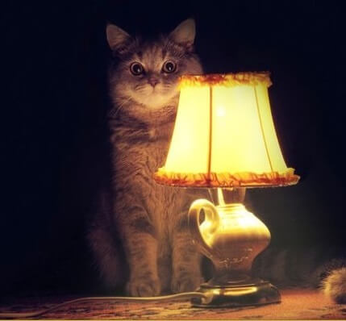

Материал из Википедии — свободной энциклопедии.
Кузнечик зелёный (лат. Tettigonia viridissima) — вид насекомых из семейства Настоящие кузнечики отряда прямокрылых. Взрослые особи достигают длины 28—36 мм.
Как и у всех настоящих кузнечиков, яйцеклад самки сжат с боков, серповидный, саблевидный или мечевидный. Голова спереди обычно с хорошо обособленной, сжатой с боков вершиной темени. Усики щетинковидные, длиннее тела. Переднеспинка с плоским или выпуклым верхом — диском и плоскими опущенными вниз боковыми лопастями; диск нередко со серединным килем. Надкрылья самца с органом стрекотания, который находится в их основании и состоит из зеркальца (прозрачной резонирующей мембраны, более развитом на правом из надкрылий) и стридуляционной части (видоизменённой передней анальной жилки, которая на левом из надкрылий снизу зазубрена). Левое надкрылье всегда лежит поверх правого. Орган слуха расположен на голенях передних ног. Формула лапок 4-4-4.
Питаются они, как правило, другими насекомыми, в частности небольшими бабочками, иногда могут прибегать к каннибализму. При отсутствии насекомых кузнечик переходит на растительную пищу, поглощая в больших количествах листья, почки и цветы деревьев и кустарников, злаковые, стебли и листья дикорастущей травы. Иногда вредит сельскохозяйственным культурам и древесным породам. Места обитания: лесистая местность прибрежной полосы, травянистые заросли по краям лесистой местности, влажные и полувлажные пастбища, луговые покосы, влажные луга, травянистые болота, края полей злаковых культур.
